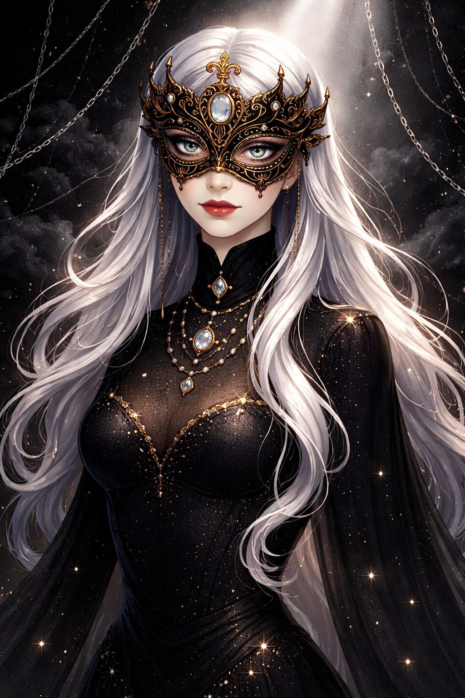
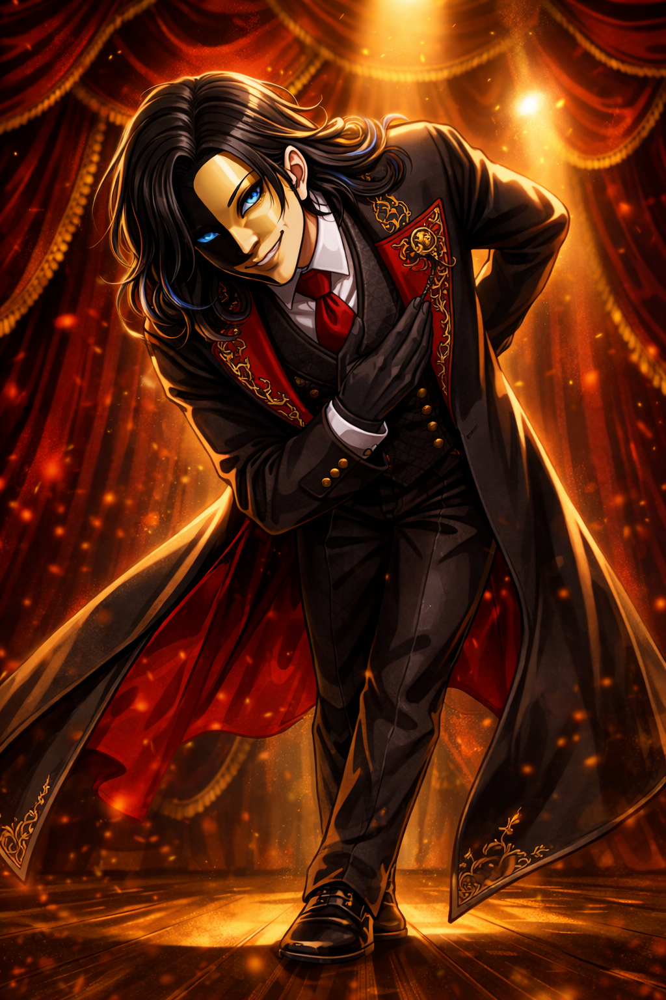
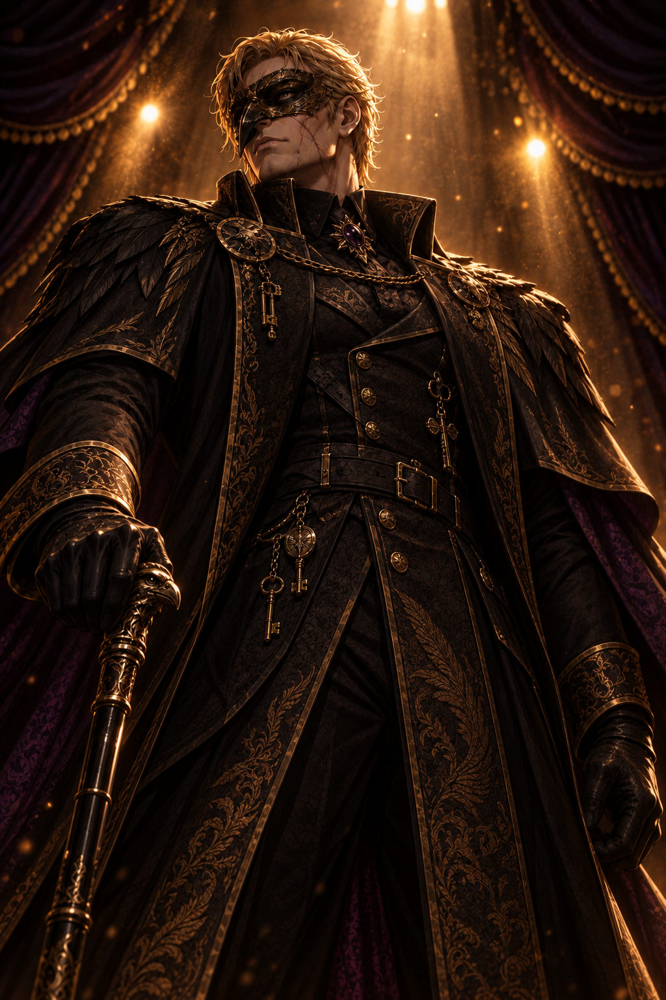
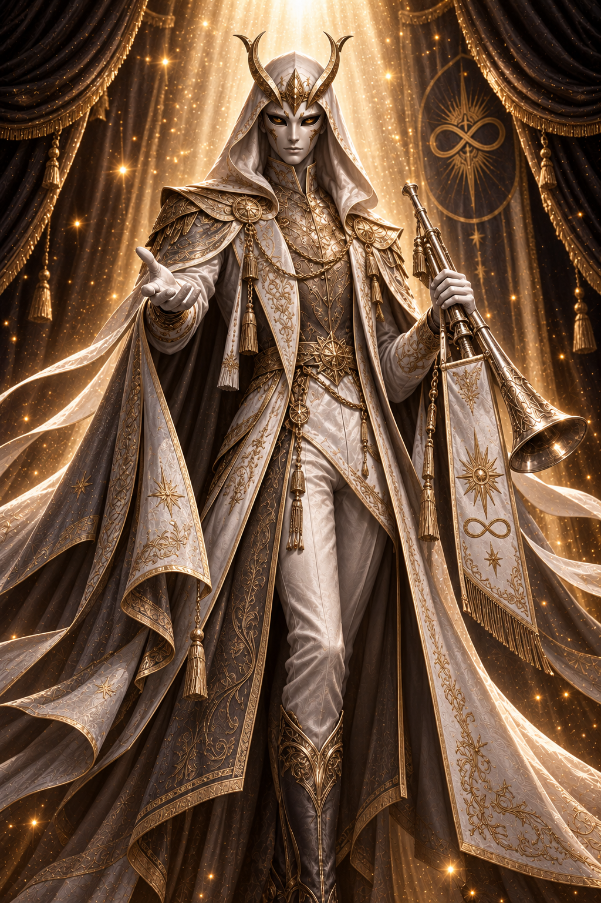
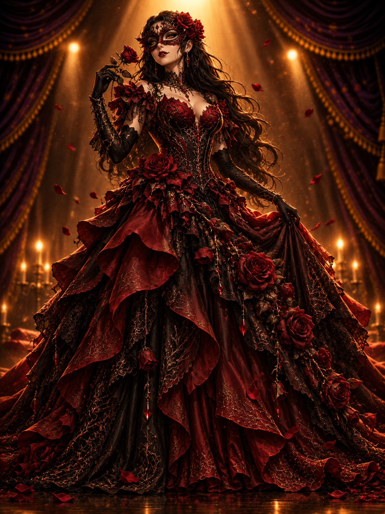
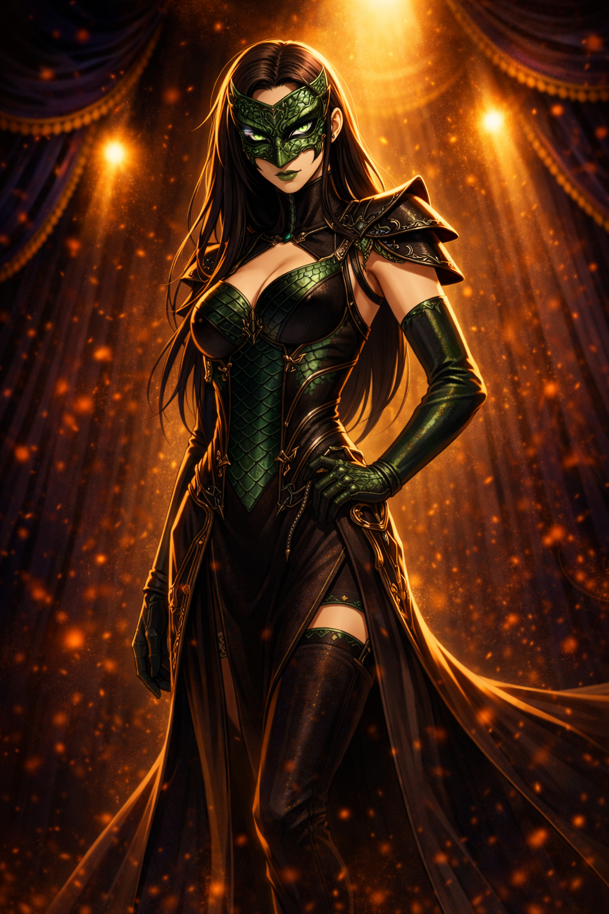
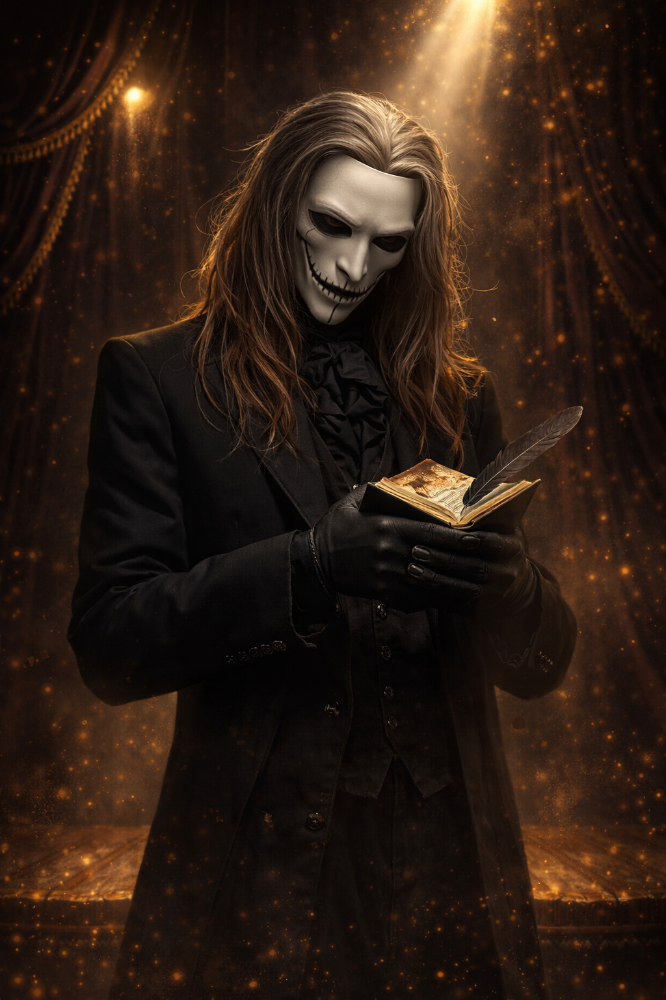
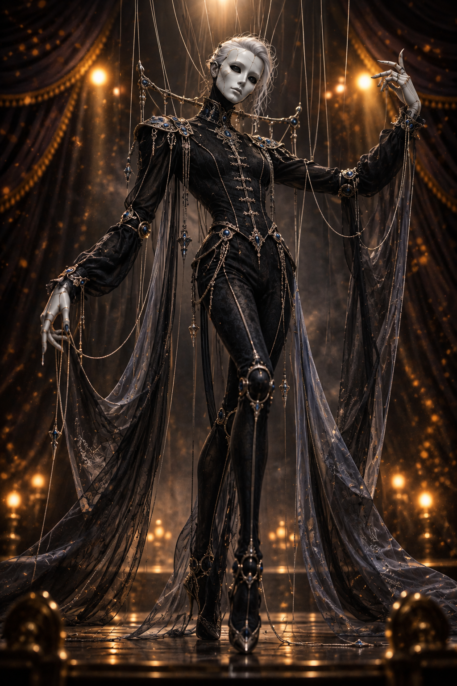
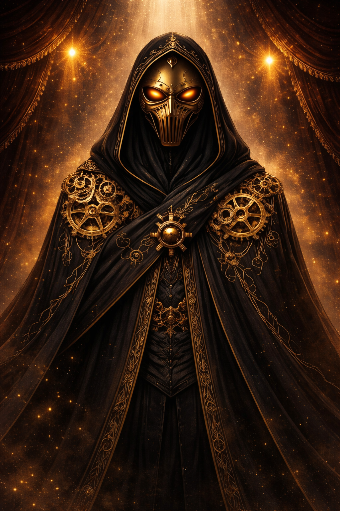
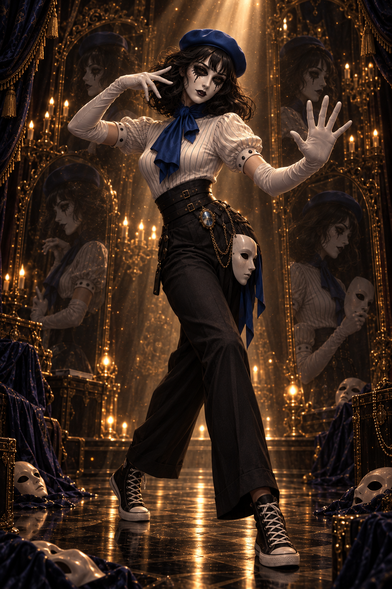

Visionária

Nome Verdadeiro: Arabella Lune
Idade: ???
Aparência: É uma mulher de pele muito clara, olhos azul-acinzentados
e cabelos brancos prateados, extremamente longos e ondulados.
Usa uma máscara dourada ornamentada com pontas delicadas e uma joia azul na testa.
Veste um elegante vestido preto de corte ajustado na cintura, com decote estruturado,
bordados dourados em padrões de estrelas e constelações, mangas amplas de tecido translúcido
e uma saia longa composta por diversas camadas esvoaçantes. Correntes douradas, cristais pendentes
e joias azuladas adornam o traje.
História : A Visionária é um nome que poucos ousam pronunciar. Na Trupe do Infinito, sua ausência é sentida como um sussurro no vento—indefinível, mas sempre presente. Ela não era uma líder tradicional. Nunca impôs regras ou doutrinas. Em vez disso, era um catalisador, alguém que fazia as coisas acontecerem simplesmente por estar ali. Mas sua história não começa com a Trupe. E, ao contrário do que muitos acreditam, também não termina com ela. Desde cedo, Arabella teve um dom: ela via padrões onde ninguém mais via. Para ela, o mundo era um quebra-cabeça de peças infinitas, um jogo complexo onde tudo estava conectado. Movimentos insignificantes levavam a eventos grandiosos. Palavras soltas se transformavam em profecias. As escolhas de um indivíduo podiam ecoar por séculos. E havia algo de errado nesse padrão. Algo desajustado. Ela não sabia explicar, mas podia sentir. Como um ator que percebe uma falha no roteiro, como um maestro que percebe uma nota fora de lugar. O mundo não deveria ser assim. Algo interferia na ordem natural das coisas. Então, ela começou a procurar. O tempo passou e seus estudos a levaram ao ocultismo, à filosofia, ao teatro, à psicologia. Tudo que pudesse ajudá-la a entender o que estava errado com a realidade. E, nesse caminho, encontrou aqueles que também estavam fora do padrão—os primeiros membros da Trupe do Infinito. Eles a seguiram, não porque ela os comandava, mas porque todos sentiam, no fundo, que ela sabia algo que eles não sabiam. Ela nunca compartilhou tudo o que sabia. Mas, pouco antes de desaparecer, deixou fragmentos de sua visão espalhados em cartas, diários e palavras soltas. A teoria era absurda, impossível, mas consistente: A realidade estava sendo escrita. Não como uma metáfora, não como um conceito filosófico, mas literalmente. Havia algo ou alguém, uma força invisível, que parecia manipular os eventos do mundo como se estivesse contando uma história. E pior: esse autor não era perfeito. Havia contradições, lapsos, momentos que pareciam deslocados. Era como se certas coisas não devessem ter acontecido, ou talvez, devessem ter acontecido de outro jeito. Ela passou anos investigando, tentando decifrar a origem dessas anomalias. Até que, um dia… Ela desapareceu.
Diletante

Nome Verdadeiro: Derick Spada
Idade: 36 anos
Aparência: Um Homem alto e esguio, de pele clara, olhos azuis intensos e cabelos castanho-escuros,
longos e ondulados, que caem sobre os ombros. Usa uma máscara assimétrica preta e dourada,
cobrindo o rosto. Veste um elegante traje aristocrático preto, composto por camisa branca,
gravata de seda vermelha, colete ajustado, calças sociais e um longo sobretudo com bordados dourados
e forro vermelho profundo. Utiliza luvas negras e sapatos sociais de couro.
História:
O Primeiro Ato: O Jovem Prodigioso
Derick nasceu em uma família aristocrática, cercado por riqueza e expectativas. Desde pequeno,
demonstrou uma inteligência e uma lábia
incomuns, encantando qualquer um que cruzasse seu caminho. Ele era um verdadeiro artista social, um
manipulador nato, um mestre
dos jogos mentais. Tudo para ele era um palco, e todos ao seu redor, meros personagens em sua peça.
Mas, apesar de seu talento, havia algo que sempre o atormentava: a efemeridade. Nada durava. Nem as
pessoas, nem os momentos,
nem os sentimentos. Ele via a vida como uma peça de teatro com um roteiro predestinado e um fim
inevitável. Isso o enojava.
O tempo passava, os atos se desenrolavam, e um dia as cortinas cairiam. E então? Nada.
Foi esse medo do fim que fez Derick buscar algo além do mundo mundano. Durante sua juventude, ele
viajou, estudou,
infiltrou-se em sociedades ocultas, colecionou segredos e encantou os mais diversos tipos de pessoas.
Mas nenhuma resposta era
satisfatória. O destino era inevitável? A peça precisava mesmo terminar?
O Segundo Ato: O Encontro com a Visionária
Foi quando ele encontrou a Visionária.
Ou melhor, foi ela quem o encontrou.
Em um teatro abandonado, enquanto vagava por suas reflexões sobre o destino, ele ouviu uma voz. Suave,
enigmática.
A voz de alguém que falava não apenas com ele, mas sobre ele. Era como se ela tivesse lido todos os seus
pensamentos antes
mesmo que ele os tivesse formulado.
Ela lhe fez uma proposta. Disse que a vida poderia ser mais do que uma peça predestinada. Que o destino
não era um script
inquebrantável, mas um palco maleável. Que aqueles que compreendessem as regras poderiam reescrevê-las.
Derick sorriu.
Ele nunca havia acreditado em predestinação, mas ali, pela primeira vez, viu um vislumbre de algo real.
Algo que poderia mudar tudo.
A Visionária o levou à Trupe do Infinito. Ali, ele encontrou outros como ele—indivíduos brilhantes,
únicos, cada um com sua própria
visão do mundo. Mas, diferente dos demais, Derick não estava interessado em meros experimentos. Ele
queria algo maior.
Corvo

Nome Verdadeiro: Edgar Baillard
Idade: 82 anos
Aparência: Homem alto, de porte robusto e musculoso, com cabelos loiros curtos e desgrenhados,
pele clara e cicatrizes discretas no rosto. Usa uma máscara negra ornamentada em dourado no formato de
um corvo, seus olhos tem um brilho roxo. Veste um traje aristocrático preto, composto por
casaco longo com bordados dourados, gola alta, ombreiras volumosas semelhantes a penas, correntes,
medalhões e pequenos ornamentos metálicos. Utiliza luvas negras
História: Edgar cresceu protegendo os irmãos de um pai violento e desenvolveu desde cedo a crença de que, quando a justiça falha, alguém precisa
aplicar a sentença. Depois de servir ao Exército durante o início de uma ditadura e abandonar a instituição ao presenciar suas atrocidades, passou anos
caçando sozinho os responsáveis pelo regime, tornando-se conhecido como Corvo. A Visionária o encontrou quando estava prestes a ser capturado e realizou
nele um ritual de Morte e Energia que ampliou seu corpo e destruiu sua percepção normal do tempo. Ela lhe entregou sua máscara, o machado Julgamento e o
tornou o primeiro membro oficial da Trupe do Infinito. Desde então, Corvo existe como seu juiz e executor. O preço é que, enquanto ele permanece
praticamente imutável, sua família envelhece — e Edgar precisa aprender a medir a passagem dos anos através das pessoas que ama.
Arauto

Nome Verdadeiro: Victor Malachai
Idade: 42 anos
Aparência: Homem de figura alta e esguia, com uma máscara branca de feições delicadas,
olhos dourados e ornamentos metálicos que formam uma coroa de chifres curvados.
Veste um elaborado traje cerimonial branco e dourado, composto por túnica de gola alta, calças claras,
botas ornamentadas e um longo manto com capuz, ombreiras estruturadas e diversas camadas de tecido
esvoaçante. Bordados florais, símbolos solares, correntes, medalhões e franjas
douradas decoram suas vestes.
História: Victor nasceu em uma família humilde de artistas itinerantes que viajavam pelas cidades
apresentando peças teatrais e recitando histórias antigas. Desde cedo, ele mostrou um talento incomum
para a oratória, hipnotizando plateias com discursos que iam além de sua idade. Seu pai, um dramaturgo
idealista, acreditava que a arte tinha o poder de transformar o mundo, enquanto sua mãe, uma atriz
pragmática, via o teatro apenas como uma maneira de sobreviver.
Essa dualidade marcou a infância de Victor. Ele herdou do pai o idealismo e o desejo de inspirar os
outros, mas também
desenvolveu um profundo ceticismo em relação às pessoas, como sua mãe. Ele cresceu observando como o
público podia ser
manipulado pelas palavras certas e passou a ver a humanidade como algo maleável — moldado não pela
verdade, mas pela
narrativa que acreditavam ser verdadeira.
A tragédia atingiu sua família quando uma revolta local culminou em um incêndio no teatro onde eles se
apresentavam.
Seus pais morreram tentando salvar o público, enquanto Victor sobreviveu por pura sorte. Esse evento
mudou sua visão de
mundo: ele deixou de ver as pessoas como algo a ser protegido e passou a vê-las como peças de uma peça
maior, movidas
apenas por conveniência e emoção.
Victor passou anos vagando, tornando-se um orador errante e acumulando seguidores que viam nele um
profeta de tempos
melhores. No entanto, ele os abandonou tão rápido quanto os conquistou, sempre em busca de algo maior.
Foi durante um
desses períodos de transição que o Diletante cruzou seu caminho.
Em uma noite sombria, enquanto Victor discursava em uma pequena vila sobre os "espetáculos do destino",
o Diletante
apareceu entre os espectadores, observando atentamente. Após a apresentação, ele abordou Victor,
desafiando-o com uma
única pergunta: "Você acredita realmente no que diz, ou apenas gosta do som da sua própria voz?"
Intrigado e insultado, Victor seguiu o Diletante até uma reunião da Trupe do Infinito, onde percebeu que
havia
encontrado algo mais profundo do que qualquer plateia poderia oferecer. Ele aceitou o papel de Arauto, o
orador oficial
e a voz pública da Trupe, não porque acreditava em seus objetivos, mas porque via a oportunidade de
moldar narrativas em
escala ainda maior.
Rosa

Nome Verdadeiro: Selena Astoria
Idade: 37 anos
Aparência: Mulher alta, de silhueta curvilínea e elegante, pele clara,
olhos escuros e cabelos castanho-escuros, longos e volumosos, com ondas que caem pelas costas.
Usa uma máscara veneziana vermelha e preta, ornamentada com espinhos, rendas e rosas vermelhas
que também adornam seus cabelos. Veste um luxuoso vestido de baile em tons de vermelho profundo
e preto, com corpete ajustado, decote estruturado e saia extremamente volumosa, formada por
diversas camadas de tecidos, rendas e babados. Rosas vermelhas, ramificações espinhosas e delicados
bordados dourados decoram todo o traje. Utiliza longas luvas negras, joias avermelhadas e
carrega uma rosa vermelha nas mãos.
História: Selena nasceu em uma pequena vila devastada pela guerra, onde aprendeu desde cedo a
associar
beleza à dor. Sua mãe era uma talentosa dançarina que usava sua arte para entreter e distrair as pessoas
em meio ao
caos. No entanto, sua mãe foi vítima de um massacre quando soldados invadiram a vila. Selena, que
assistiu à cena
escondida, carregou consigo tanto o trauma quanto a memória do olhar resoluto de sua mãe enquanto
dançava pela última vez.
Órfã, Selena foi acolhida por um teatro itinerante, onde descobriu seu talento natural para a dança e o
drama.
Ela logo se destacou, usando sua arte para cativar e manipular emoções, exatamente como sua mãe fazia.
No entanto, sua
ascensão foi marcada por uma crescente obsessão com a ideia de que a beleza verdadeira só surge em meio
à dor. Em uma de
suas apresentações, ela usou a tragédia de sua própria vida como inspiração, provocando uma resposta tão
visceral do
público que sentiu como se tivesse finalmente compreendido o significado de sua existência.
Porém, esse momento de êxtase foi seguido por um vazio esmagador. Selena percebeu que, por mais bela que
sua arte fosse,
ela nunca preenchia o abismo emocional dentro dela. Em busca de algo mais, Selena abandonou o teatro e
começou a vagar
pelo mundo, atraída por histórias de pessoas e lugares marcados por sofrimento, transformando essas
experiências em suas
performances pessoais.
Víbora

Nome Verdadeiro: Cassandra Delacroix
Idade: 34 anos
Aparência: Mulher alta, de silhueta esguia e elegante, pele clara, olhos escuros
e cabelos negros, longos e lisos. Usa uma máscara veneziana preta e dourada com formas
de serpentes entrelaçadas e uma joia verde na testa. Veste um traje sofisticado em tons
de preto e verde-escuro, composto por corpete estruturado, decote acentuado, gola alta
rendada e saia longa com fenda lateral, adornados por bordados dourados, correntes e pedras
esmeralda. Um manto verde translúcido envolve seus braços,
enquanto luvas negras com garras metálicas.
História: Cassandra nasceu em uma família aristocrática, conhecida por sua riqueza e influência
política.
Desde cedo, foi criada para ser a herdeira perfeita: elegante, inteligente e manipuladora. No entanto,
por trás das
festas luxuosas e do sorriso impecável, sua vida era um ninho de cobras. Sua mãe era uma figura
opressiva e exigente,
que tratava Cassandra como um peão para os jogos de poder da família. Seu pai, um homem distante e
infiel, ignorava a
existência da filha.
A única lição que Cassandra aprendeu com sua família foi que o poder não era dado, mas tomado. Quando
completou 20 anos,
ela finalmente rompeu com sua vida controlada. Envenenou a mãe com um coquetel aparentemente inofensivo
e assumiu o
controle da fortuna familiar. Cassandra tornou-se uma especialista em manipular pessoas, acumulando
riquezas e poder
com sua mente afiada e seu charme letal.
O ápice de sua manipulação levou a um erro fatal: uma aliança política mal calculada resultou em sua
queda.
Seus aliados tornaram-se inimigos, e Cassandra foi traída, perdendo tudo o que havia conquistado.
Para escapar de seus perseguidores, ela se escondeu no submundo, onde ouviu falar da Trupe do Infinito.
Foi o Arauto quem a encontrou, reconhecendo seu potencial. Ele a apresentou ao Diletante, e Cassandra
foi submetida
a uma prova mortal: sobreviver a um banquete envenenado, onde cada prato continha um antídoto escondido.
Cassandra
não só sobreviveu como identificou e usou as fraquezas de seus competidores para assegurar sua vitória.
Ao ingressar na Trupe, ela abraçou completamente a persona da Víbora. Para Cassandra, a Trupe oferecia
algo que ela
nunca teve: liberdade para agir sem as correntes de uma sociedade hipócrita.
Poeta

Nome Verdadeiro: Leopold Fontaine
Idade: 55 anos
Aparência: Homem de pele clara, cabelos castanho-claros e partes grisalhas,
longos e ondulados, que caem sobre os ombros. Usa uma máscara branca de aparência teatral,
com olhos escurecidos, delicadas rachaduras e um sorriso sutil e inquietante.
Veste um elegante traje aristocrático preto, composto por casaco longo com bordados dourados,
colete ornamentado, calças escuras e camisa com punhos de renda branca.
Uma gravata de babados em vinho profundo, presa por um broche de rubi, complementa o conjunto.
Utiliza luvas negras, anéis ornamentados e uma bengala de cabo dourado,
além de carregar um pequeno livro acompanhado de uma pena.
História: Leopold nasceu em uma família nobre, cercado por livros, arte e opulência. Desde cedo,
ele foi
incentivado a explorar a poesia e a literatura, áreas que rapidamente se tornaram seu refúgio emocional.
Enquanto os
outros membros da aristocracia desprezavam suas sensibilidades artísticas, Leopold mergulhava cada vez
mais em sua
própria mente, escrevendo para escapar da frieza do mundo ao seu redor.
Aos 20 anos, ele publicou seu primeiro livro de poesias, que foi aclamado pela crítica, mas ignorado
pelo público.
Essa experiência o marcou profundamente: ele percebeu que as pessoas só valorizavam o superficial,
deixando de lado
aquilo que realmente importa. Sentindo-se incompreendido, Leopold começou a se afastar da sociedade,
preferindo o
isolamento criativo. Ele passou anos escrevendo em reclusão, até que um trágico incêndio destruiu sua
mansão, levando
consigo toda a sua obra.
Essa perda irreparável transformou Leopold. Ele não apenas perdeu seus escritos, mas também sua fé na
durabilidade da
arte e na memória humana. Convencido de que a beleza é algo efêmero e fadado ao esquecimento, Leopold
abandonou sua
antiga vida e embarcou em uma jornada pelo mundo, buscando entender o significado da criação e da
destruição.
Leopold encontrou a Trupe do Infinito em um teatro abandonado enquanto explorava cidades esquecidas. Ele
foi atraído
pelo som de uma melodia melancólica, e, ao entrar no teatro, encontrou o Diletante recitando um poema
antigo.
A profundidade das palavras e a teatralidade da apresentação tocaram Leopold de uma maneira que ele não
sentia há décadas.
O Diletante o reconheceu imediatamente como um espírito afim e o convidou a se juntar à Trupe. Leopold
aceitou, não porque
acreditava em seus objetivos, mas porque viu na Trupe uma oportunidade de explorar os limites da
expressão humana.
Ele se tornou o conselheiro intelectual do grupo, usando sua vasta sabedoria e domínio das palavras para
ajudar a
estruturar os espetáculos e os rituais.
Marionete

Nome Verdadeiro: Imogen Lévesque
Idade: 29 anos
Aparência: Mulher alta e esguia, de silhueta delicada, cabelos brancos prateados
presos parcialmente para trás e rosto coberto por uma máscara branca de porcelana,
com olhos negros vazios e pequenas rachaduras. Veste um elegante traje preto ajustado ao corpo,
composto por corpete de gola alta, mangas bufantes, calças ornamentadas e botas de salto alto.
Ombreiras estruturadas, correntes prateadas, bordados delicados e joias azul-safira decoram suas vestes.
Longos tecidos negros translúcidos pendem de seus braços, enquanto suas mãos apresentam
articulações semelhantes às de uma boneca de porcelana. Diversos fios finos e prateados
envolvem seu corpo e se estendem acima dela, lembrando uma marionete suspensa.
História: Imogen cresceu como filha de artistas de um circo itinerante na França. Desde cedo, ela
aprendeu a
dominar o palco, especializando-se em acrobacias e pantomima, destacando-se por sua graça quase
sobrenatural.
No entanto, por trás do espetáculo, havia um ambiente sombrio. Seu pai era um homem abusivo e
controlador que via a
filha apenas como uma ferramenta para lucrar e expandir a fama do circo. Sua mãe, submissa, nunca
conseguiu intervir.
Uma noite, durante uma apresentação, um acidente ocorreu no palco. As cordas que sustentavam Imogen em
uma performance
aérea foram sabotadas, e ela caiu de grande altura. Sobreviveu milagrosamente, mas ficou marcada física
e emocionalmente.
Os rumores indicavam que o próprio pai orquestrou o incidente para punir a filha por sua "arrogância".
Imogen desapareceu logo após sua recuperação, abandonando o circo e sua antiga vida.
Anos depois, enquanto vagava pelas sombras das ruas parisienses, Imogen chamou a atenção da Víbora
durante uma missão de
infiltração. A Víbora, reconhecendo o talento natural de Imogen para manipular a atenção alheia e criar
ilusões visuais
com sua performance, a recrutou para a Trupe do Infinito.
No início, Imogen foi relutante, mas a promessa de uma vida onde ela teria controle sobre sua arte — e
sobre seu
destino — foi irresistível. O Diletante viu em Imogen uma peça vital para os espetáculos, alguém capaz
de transformar o
palco em um universo de confusão e maravilha.
Relógio

Nome Verdadeiro: Auguste Renard
Idade: 42 anos
Aparência: Homem de cabelos castanhos, médios e ondulados, penteados para trás de
maneira levemente desalinhada. Usa uma máscara assimétrica de bronze envelhecido,
ornamentada com engrenagens e mecanismos de relógio, cobrindo parcialmente os olhos.
Veste um elegante traje aristocrático em tons de preto e azul profundo, composto por
sobretudo longo de gola alta, colete ornamentado, camisa escura com lenço no pescoço e
calças sociais. Bordados dourados, correntes, pequenos relógios, engrenagens e uma joia
azul adornam suas vestes. Utiliza luvas negras, segura uma bengala com detalhes de relógio
e observa um relógio de bolso dourado. Sua expressão séria e postura refinada transmitem
uma presença intelectual, calculista e misteriosa.
História: Auguste nasceu em uma cidade industrial onde a vida era definida pela precisão das
máquinas.
Seu pai era um relojoeiro habilidoso, mas obsessivo, que acreditava que o universo era uma engrenagem
perfeita
e que qualquer falha era culpa de quem não seguia "o ritmo natural". Essa obsessão foi passada para
Auguste,
que desde cedo foi ensinado a trabalhar com engrenagens e mecanismos complexos.
Porém, a rigidez do mundo de seu pai contrastava com os impulsos criativos de sua mãe, uma pintora que
via
beleza no caos. Auguste foi marcado por um evento trágico na infância: um acidente em que seu pai,
tentando
corrigir um relógio defeituoso, acabou causando um incêndio que destruiu o ateliê de sua mãe e a levou à
morte.
Esse incidente cimentou duas crenças em Auguste: que o tempo é o mestre absoluto da existência e que a
obsessão
por controle pode destruir aquilo que deveria ser belo.
Após a morte de seus pais, Auguste se dedicou ao estudo da mecânica e da física, mas com um interesse
obsessivo
em como o tempo influencia tudo. Ele se tornou um inventor brilhante, criando dispositivos
impressionantes, mas
seu comportamento obsessivo o afastou de qualquer conexão emocional. Ele passou anos viajando, estudando
relógios antigos, maquinários e qualquer coisa que pudesse ajudá-lo a compreender como o tempo moldava o
mundo.
Auguste encontrou o Arauto em um leilão clandestino de artefatos raros. Fascinado pelos
conhecimentos e filosofias do grupo, Auguste foi atraído pela ideia de um espetáculo que revelasse a
verdadeira essência do tempo e sua relação com o destino humano. Para ele, unir-se à Trupe foi uma
oportunidade
de explorar os limites da existência temporal, mas também de encontrar um equilíbrio entre controle e
caos.
Ele assumiu o título de Relógio, simbolizando sua obsessão com a fluidez do tempo e sua crença de que
cada
pessoa é uma engrenagem no grande mecanismo do destino.
Mímica

Nome Verdadeiro: Amelié Poulin
Idade: 23 anos
Aparência: Mulher jovem, de estatura média e silhueta esguia, pele clara, olhos escuros e cabelos pretos, curtos e ondulados, com franja sobre a testa. Usa uma boina azul royal e maquiagem teatral, com desenhos negros semelhantes a lágrimas escorrendo dos olhos e batom escuro. Veste uma blusa branca de listras finas, mangas bufantes e gola adornada por um lenço azul, combinada com calças pretas de alfaiataria, cintura alta marcada por cintos e correntes douradas. Utiliza longas luvas brancas e tênis All Star pretos de cano alto. Carrega uma máscara branca de porcelana presa à cintura, com detalhes em azul. Sua expressão enigmática e postura expressiva transmitem uma personalidade brincalhona, teatral e misteriosa.
História: ???